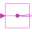

SMEE_DOLElectricalExcitedSynchronousInductionMachine starting direct on line |
|
Diagram
{kind=link}
Information
This information is part of the Modelica Standard Library maintained by the Modelica Association.
An electrically excited synchronous generator is started direct on line utilizing the damper cage (and the shorted excitation winding) at 0 seconds.
At t = 0.5 seconds, the excitation voltage is raised to achieve the no-load excitation current. Note, that reactive power of the stator goes to zero.
At t = 2 second, a driving torque step is applied to the shaft (i.e. the turbine is activated). Note, that the active (and the reactive) power of the stator change. To drive at higher torque, i.e., produce more electric power, excitation has to be adapted.
Simulate for 3 seconds and plot:
smee.tauElectrical: electric torquesmee.wMechanical: mechanical speedcurrentRMSSensor.I: quasi RMS stator currentirRMS: quasi RMS rotor currentsmee.ie: excitation currentrotorDisplacementAngle.rotorDisplacementAngle: rotor displacement angleelectricalSensor.powerTotal: total electric real powermechanicalSensor.power: mechanical power
Default machine parameters are used.
Note
The mains switch is closed at time = 0 in order to avoid non physical noise calculated by the rotorDisplacementAngle.
This noise is caused by the interaction of the high resistance of the switch and the machine, see
#2388.
Parameters (5)
| VNominal |
Value: 100 Type: Voltage (V) Description: Nominal RMS voltage per phase |
|---|---|
| fNominal |
Value: 50 Type: Frequency (Hz) Description: Nominal frequency |
| Ve |
Value: smeeData.Re * smeeData.IeOpenCircuit Type: Voltage (V) Description: Excitation current |
| gamma0 |
Value: 0 Type: Angle (rad) Description: Initial rotor displacement angle |
| smeeData |
Value: Type: SynchronousMachineData |
Connectors (1)
| irRMS |
Type: RealOutput Description: Damper cage RMS current |
|---|
Components (16)
| smee |
Type: SM_ElectricalExcited |
|
|---|---|---|
| rotorDisplacementAngle |
Type: RotorDisplacementAngle |
|
| groundExcitation |
Type: Ground |
|
| mechanicalSensor |
Type: MultiSensor |
|
| electricalSensor |
Type: MultiSensor |
|
| currentRMSSensor |
Type: CurrentQuasiRMSSensor |
|
| sineVoltage |
Type: SineVoltage |
|
| star |
Type: Star |
|
| ground |
Type: Ground |
|
| rampVoltage |
Type: RampVoltage |
|
| terminalBox |
Type: TerminalBox |
|
| smeeData |
Type: SynchronousMachineData |
|
| switch |
Type: IdealClosingSwitch |
|
| booleanStep |
Type: BooleanStep |
|
|  | booleanReplicator |
Type: BooleanReplicator |
| torqueStep |
Type: TorqueStep |